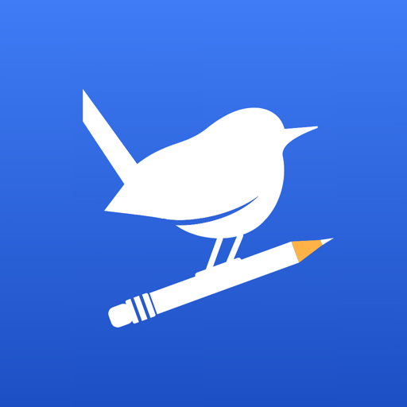
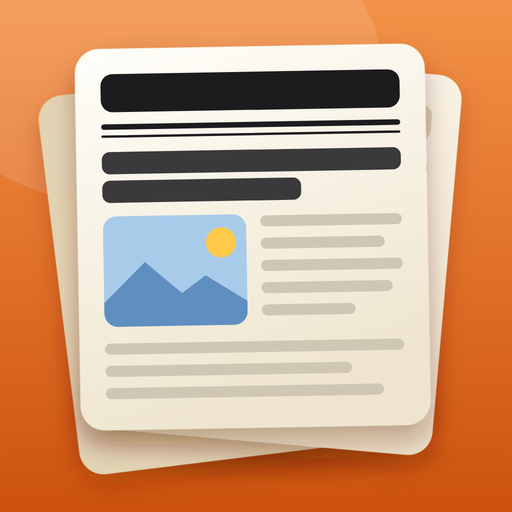

Privacy Policy
Last updated November 19, 2026
The short version: no accounts, no ads, and I never sell or share your information. What you do in my apps stays on your device.

Wren WorkbookWren Workbook has no accounts, no ads, and no analytics or tracking. I don't run a server for it, I can't see your notes or to-dos, and I don't sell or share anything with anyone.
Data stays on your device
Your projects, notes, to-dos and sketches are stored on your device. Deleting the app deletes them from that device. Where else they go depends on the sync option you choose in Settings → Sync.
iCloud
With iCloud sync (the default), your data is stored in your own private iCloud database so your iPhone and iPad stay in step. Only your Apple Account can read it; I can't. Apple's handling of it is covered by Apple's privacy policy.
Your own server
If you choose Custom Server, the app sets up a server in your Cloudflare account, using an API token you create and paste in. The app uses that token only to set up, update or delete your server. Your data is then stored in your Cloudflare account. The Cloudflare token, the server's address and its access token are saved in your iCloud Keychain, so your other devices can connect and update the server; they're sent only to Cloudflare and your server. Cloudflare's handling of it is covered by Cloudflare's privacy policy. I have no access to your server.
The web app and Claude connector
A custom server also serves a web app and a connector for Claude. Anyone with the web app's address and token, or the connector's address, can read and change your notes and to-dos, so keep them private. If you add the connector to Claude, Claude reads and changes your data when you ask it to, and Anthropic's privacy policy covers what Claude does with it.
This Device Only
With This Device Only, nothing leaves your device.
Handwriting and search
Find To-Dos and sketch search read your handwriting with Apple's on-device text recognition. The text it finds is kept in a local cache on your device and is never uploaded or synced.
Siri, Shortcuts and Apple Intelligence
If you use Wren Workbook with Siri, Shortcuts or Apple Intelligence, your request is handled by Apple under Apple's privacy policy, and the app saves what you asked for on your device.
App icon badge
If you turn on the badge, the app asks for notification permission so it can update the Today count at midnight. It never sends you notifications, and nothing is sent anywhere.
Crash reports
If you've opted in to sharing analytics with developers in your device's Privacy & Security settings, Apple may send me anonymized crash reports.

Quoin ReaderQuoin Reader has no accounts, no ads, and no analytics or tracking. I don't sell or share your information with anyone.
Data stays on your device
Your feeds, downloaded articles, categories, favorites, saved stories, read status and settings are stored only on your device. I don't run any servers that receive this data, and I can't see it. Deleting the app deletes all of it.
Fetching feeds
When Quoin Reader checks for new stories, your device connects directly to the websites you follow. Like any website visit, those sites receive your IP address and basic technical information, which is covered by their own privacy policies.
On-device intelligence
The Briefing and smart filters (Quoin Pro) use Apple's on-device language model. Story titles and previews are processed on your device and are never sent to me or to any other service.
Weather (Quoin Pro)
If you allow location access, your approximate location is sent to Apple's WeatherKit to get the forecast. You can choose a city instead, or turn weather off entirely. I don't store your location; Apple's handling of it is covered by Apple's privacy policy.
Purchases
Quoin Pro subscriptions are processed by Apple. I never receive your name, payment details or Apple Account information — only whether your subscription is active.
Crash reports
If you've opted in to sharing analytics with developers in your device's Privacy & Security settings, Apple may send me anonymized crash reports.
ClockBar
ClockBar collects no data. If you've opted in to sharing analytics with developers in your device's Privacy & Security settings, Apple may send me anonymized crash reports.
Robodraft
Robodraft collects no data. If you've opted in to sharing analytics with developers in your device's Privacy & Security settings, Apple may send me anonymized crash reports.
Contact
If this policy changes, the date above will change too. Questions? Email support@amick.app.